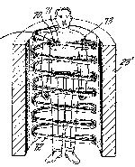

Scientist and inventor
1. Find the URL (Web address) of the science magazine Scientific American, and go to their Web page.
The URL of Scientific American is: http://www.sciam.com
2. Checking the available articles from the June 1997 issue of Scientific American, find the name of the Armenian scientist. What did he invent?
Raymond Damadian invented Magnetic resonance scanning or imaging (MRI), a method of looking inside the body without using surgery, harmful dyes or x-rays. The MR scanner uses magnetism and radio waves to produce remarkably clear pictures of the human anatomy. The patent document for his invention contains this picture:
|  |
3. Send him an email message (one per school) about his invention. You can address the message to the company he founded in 1978.
The email address of Fonar Corporation which Damadian founded is: Info@FONAR.com
4. Can you find other contemporary famous Armenians on the Web?
At http://www.cilicia.com/armo22.html you can find a list of famous Armenians, half-Armenians, 1/64th Armenians, suspected Armenians... Everyone from Atom Egoyan, the film director, to Andy Madadian, the "Persian Elvis", is listed there.
(Click on the Linking icon to go back)